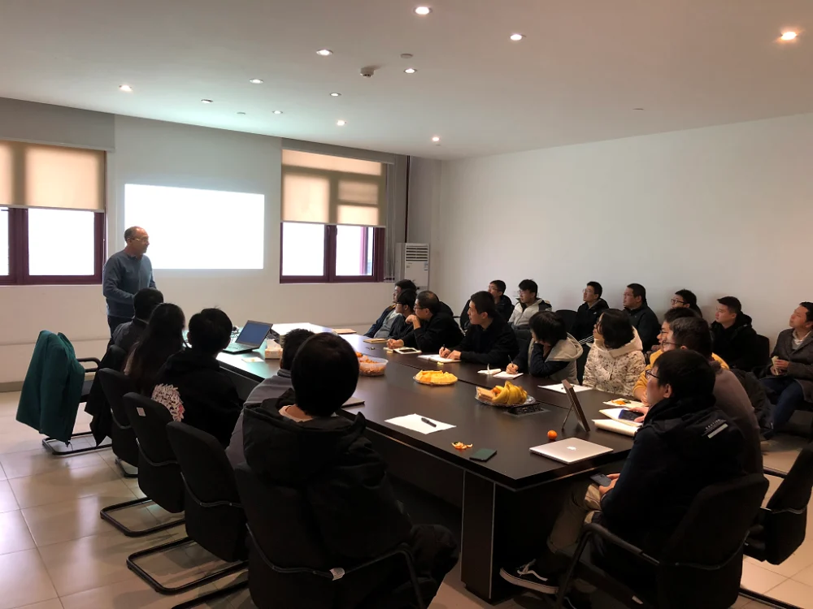
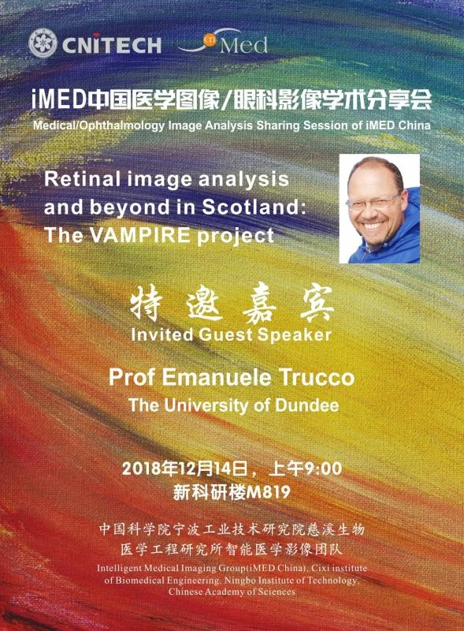
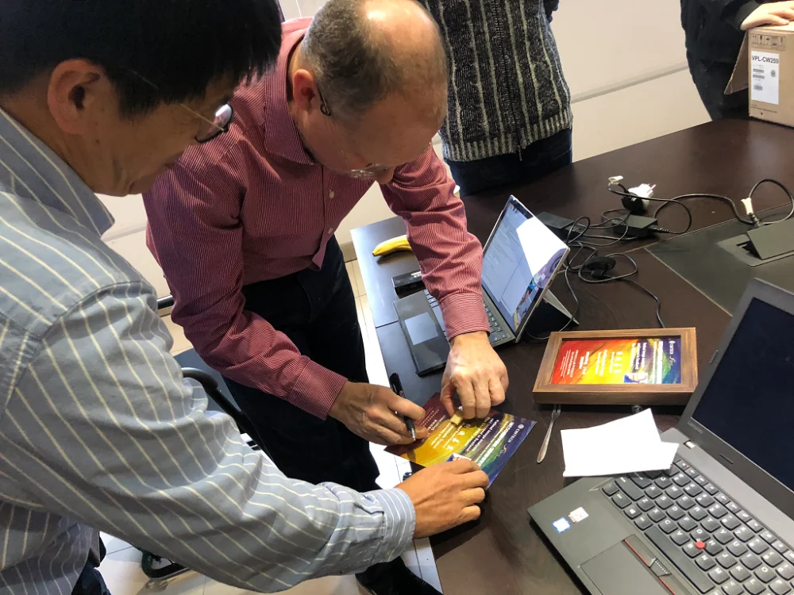
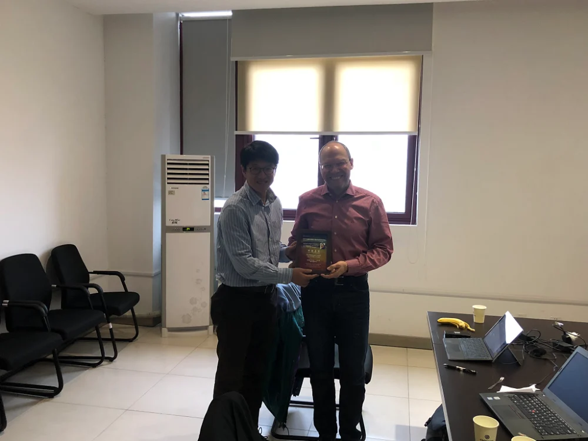
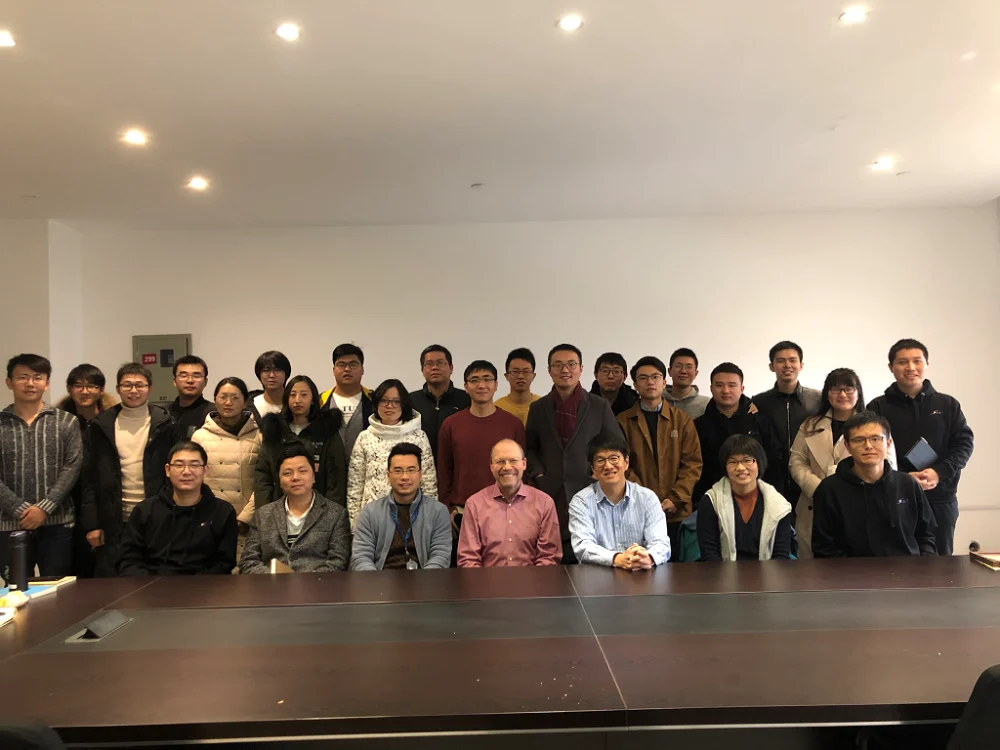

2018年12月14日上午9:00，英国邓迪大学教授Emanuele Trucco来到iMED中国进行了一次精彩的学术报告，本次报告的标题是：Retinal image analysis and beyond in Scotland: the VAMPIRE project。
本次讲座是VAMPIRE（眼底图像的血管评估和测量平台）项目的概述，它是自20世纪初以来由英国邓迪大学创建并领导的国际性和跨学科的研究项目。VAMPIRE是高度跨学科的，将医学图像分析、机器学习和数据分析、医学研究、以及大规模的数据研究结合在一起，本次讲座简要介绍了VAMPIRE的目的、内容和当前成果。
而这次分享会的嘉宾Emanuele（Manuel）Trucco教授，现任邓迪大学计算机科学与工程学院NRP主席，NHS泰赛德的名誉临床研究人员，中国科学院兼职教授。Emanuele Trucco教授分别于1984年和1990年在意大利热那亚大学获得电子工程硕士和博士学位。在计算机视觉领域Emanuele Trucco教授也一直很活跃，并于2002年首次开展医学图像分析，自此共发表250多篇期刊论文和2部教材，并服务于英国和国际重大会议的组建小组或项目委员会。
除此之外，Emanuele Trucco教授还是我们iMED的老朋友，曾今在新加坡的时候就建立起来的深厚的友谊这次又带到了中国，我们非常地开心能将老朋友Emanuele Trucco教授从英国请来中国做这份报告。
为了欢迎远道而来的Emanuele Trucco教授，研究生郝华颖带领了几个小伙伴在报告前一天晚上做完科研后前往旁边的步行街买了好多的水果，会议桌上的那些水果就是她们买来的，为长时间的会议持续的提供了“血液补充”。而且借此机会，我们还首次为报告增添了送签名相册作为礼物的环节，拿到了高颜值的签名相册之后，Emanuele Trucco教授原本就灿烂的笑容彻底的绽放了出来。买水果和送签名相册这样的一点一滴的良苦用心的打磨下，我们自然可以期待未来iMED分享会将会变的越来越好，这也更进一步的将“团队是由人组成的”这一点体现了出来，人情上的关怀让团队内的成员们彼此更加关照，也为远道而来的旅客增添了一份温暖的气息，这就像家的感觉一样。
在报告开始前，刘江老师这次将所有人的自我介绍的ppt放映了一遍，亲自给远道而来的Emanuele Trucco教授介绍了团队中的所有人，就像介绍家人一样。随后Emanuele Trucco教授的报告深入浅出，生动活泼，向在座的我们诠释了真正的科研是如何将问题进行深入下去进行层层解剖的，还让我们看到了现代科研团队所拥有的更加系统化和工程化的一面。科研不再只是高高在上的阳春白雪，还是确实运用到实际的科学的工程，在座的听众都深感受益匪浅，报告结束后也纷纷向Emanuele Trucco教授就自己的想法进行请教与探讨，气氛格外的热烈。
“海外”存知己，天涯若比邻，美丽的相框记录下了美好的友谊，交织的科研领域带来了合作的土壤，Emanuele Trucco教授此行虽短，但回味深远，这得感谢Emanuele Trucco教授不远万里前来分享交流，也要感谢iMED中国的小伙伴们的良苦用心。一次完美的iMED中国分享会就此谢幕，期待未来能越办越好！

Emanuele Trucco教授的精彩演讲

给Emanuele Trucco教授的分享会纪念相片

刘江老师和Emanuele Trucco教授在分享会相片上签字

送给Emanuele Trucco教授相册纪念

大合照！！！